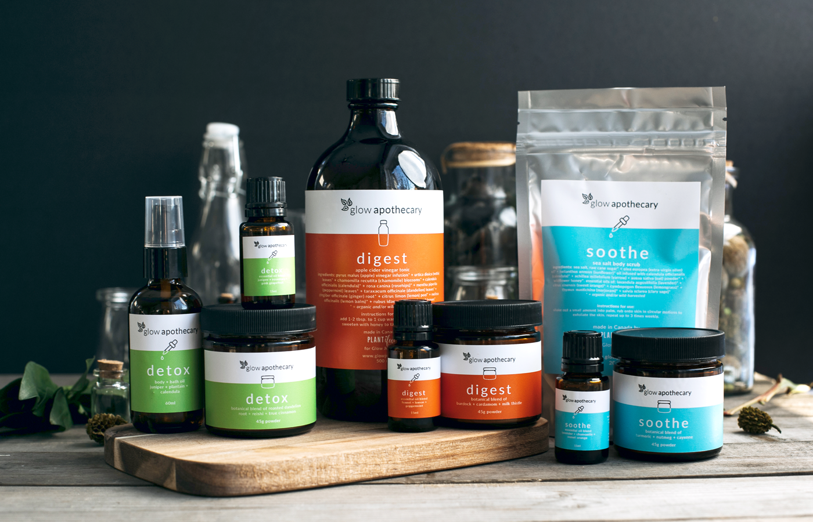
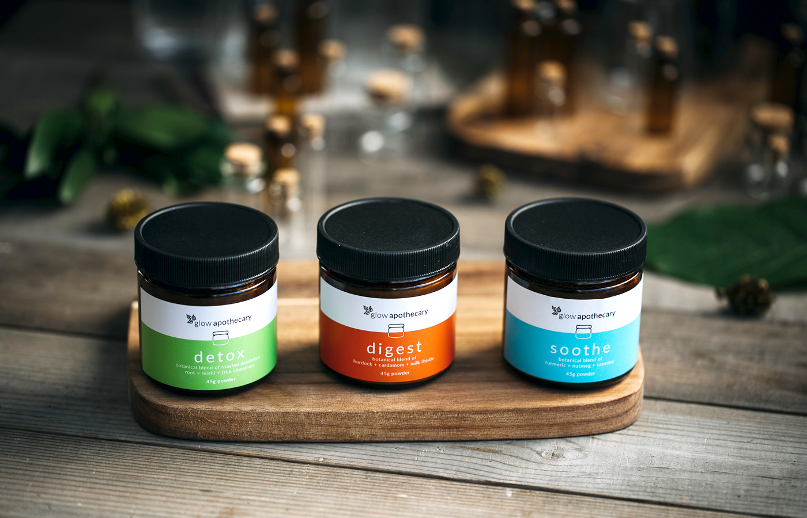

GLOW APOTHECARY
BRAND IDENTITY AND PACKAGING
Glow Apothecary is a collaborative product line between three local businesses: Glow Juicery, PLANTiful and Herbologie. With the goal of fusing Glow Juicery’s current brand and the 7 healing directions together, I collaborated with founder Marnie to create a logo, colour palette, product icons and an array of vibrant product labels for the Apothecary line.

"Mimi was instrumental in helping us identify a product line's new brand look and feel. She has the ability to capture design concepts quickly and support the evolution of a product or brand story in a very creative, tangible format."
Marnie Ashcroft, Founder
Glow Juicery
